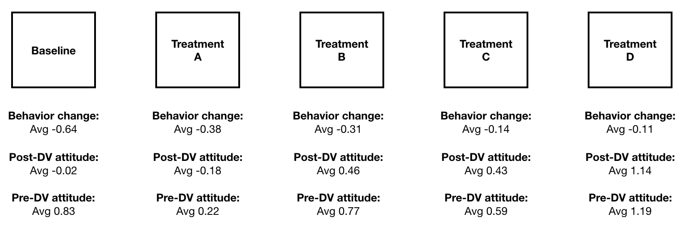
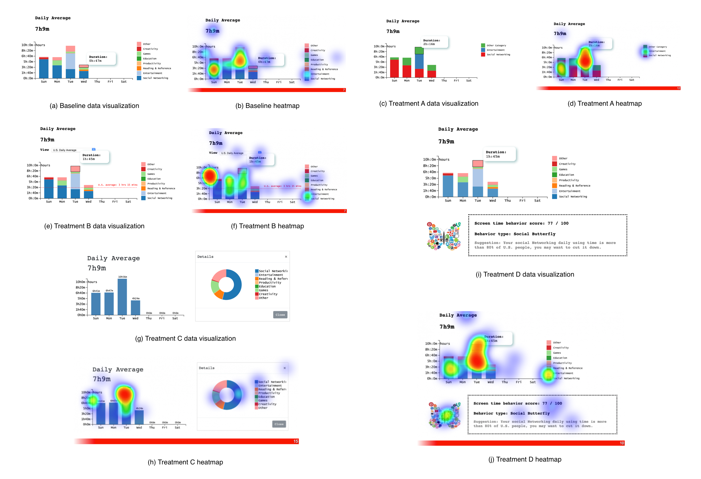

Analyzing the Persuasive Power of Data Visualization on the Behavior Change of Smartphone User
Abstract
While data visualization has served as an important tool to guide decision making, there has been relatively less research done to analyze the impact of a visualization method towards user's behavior. In this study, we design and conduct experimental study to analyze the impact of a series of different visualization methods on user's behavior change. Specifically, we focus on analyzing the effects of different screen time visualization and user's smartphone usages, to compare the persuasive power of good visualization against bad ones.
Methods
We develop four different visualization methods and compare to the baseline visualization to study how they could change user's behavior. The details of each visualization could be found in the following links

Results
We visualize the heatmap from a group of users over the baseline visualization and four treatment we designed as what follows:
